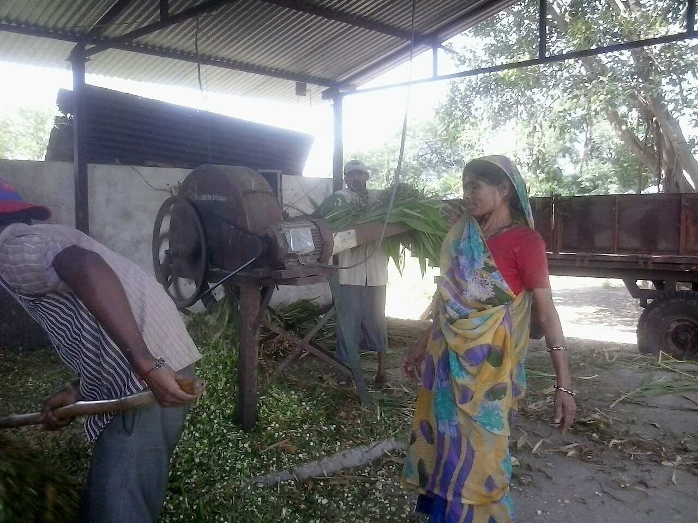
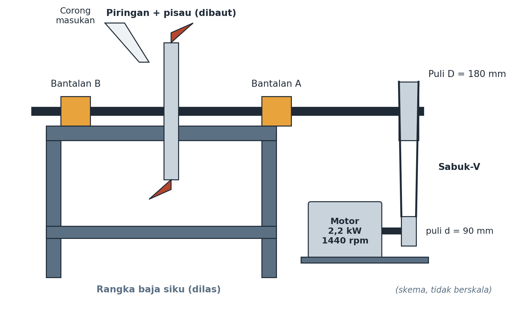

Pertemuan 14 · Studi kasus mesin pencacah rumput 2,2 kW — rantai angka lengkap


| Langkah | Hasil | Status |
|---|---|---|
| 1 Sabuk | n2=720 rpm; V=6,79; F1−F2=324; F1/F2=4,45; F2=94; F1=418; Fb=512 N; 3 sabuk-A nfs=1,36 | Aman, paling kritis |
| 2 Poros beban | T=29,2 N·m; RA=648; RB=137 N; M=41,0 N·m | — |
| 3 Poros Ø25 1020 | σ=26,7; τ=9,5; σ'=31,4 → n=6,7 | Aman |
| 4 UCP205 | P=0,78 kN; L10=5.825; Lh=134.800 jam | Aman |
| 5 Baut 2×M8 | Fc=195; F=486; τ=4,8 → n=28,6 | Aman (kendor!) |
| 6 Las 2×h4l60 | F=762; A=339; τ=2,2 → n=88,7 | Aman (mutu!) |
Titik kritis = sabuk (rasio terhadap syarat hanya 1,36/1,1=1,24; poros 2,2; bantalan 6,7; baut 14; las 44). Naikkan daya → ubah sabuk dulu.
Jika motor diganti 3,7 kW, komponen mana dihitung ulang pertama? Mengapa?
Mengapa baut n=28,6 dan las n=88,7 tidak serta-merta diperkecil?
Disusun dari 8 PPT kuliah + RPS Desain Komponen Mesin (3MES40016), Prodi Pendidikan Teknik Mesin FT Unimed. Rujukan: Shigley et al. (2015), Mott (2018), Juvinall & Marshek (2020), Sularso & Suga (2004).